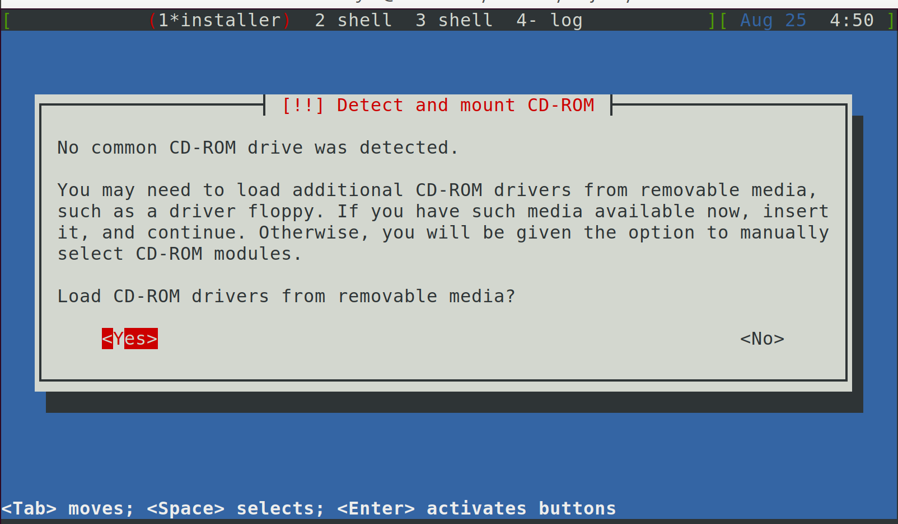

Virtual Machine Setup
It is recommended to use either libvirt management suite or raw QEMU for the Linux kernel development. The following instructions are based on Ubuntu 22.04.
Choice 1: libvirt Managed KVM
The libvirt (virsh) suite provides management of different vitalization solutions
including KVM and Xen. It’s more handy to control the VM, networking, etc.,
than typing raw QEMU commands each time.
Install the libvirt toolchain:
sudo apt-get install qemu-system qemu-kvm libvirt-daemon-system libvirt-clients virtinst ebtables dnsmasq
Your username should be in the libvirt group and the kvm group. If not, add the
user to two groups (and re-login for them to take effect):
sudo usermod -aG libvirt $USER
sudo usermod -aG kvm $USER
1.a Customize Preseed File
Use the pressed file debian-preseed.cfg in this repo to automate the guest OS installation. Copy and customize it:
mkdir workspace && cd workspace
git clone https://github.com/OrderLab/linux-dev-bootcamp.git bootcamp
mkdir vm && cd vm
cp ../bootcamp/debian-preseed.cfg preseed.cfg
Use an editor to change preseed.cfg such as the new user, initial password, hostname.
For example, you can change the hostname configuration as follows:
- d-i netcfg/get_hostname string order
+ d-i netcfg/get_hostname string obiwan-dev
1.b Download Guest OS Installation ISO
If the OS image is not available, run the following command to download the image. On the group servers, it is likely that the image has been downloaded and mounted, so you should skip this step.
wget -O debian-12.5.0-amd64-netinst.iso https://cdimage.debian.org/cdimage/archive/12.5.0/amd64/iso-cd/debian-12.5.0-amd64-netinst.iso
For Debian 10
wget -O debian-10.9.0-amd64-netinst.iso https://cdimage.debian.org/cdimage/archive/10.9.0/amd64/iso-cd/debian-10.9.0-amd64-netinst.iso
Next define variables for the OS version and image path, which will be used by later commands.
os_ver=debian12
img_path=debian-12.5.0-amd64-netinst.iso # or on group servers: /data/share/debian-12.5.0-amd64-netinst.iso
For Debian 10
os_ver=debian10
img_path=debian-10.9.0-amd64-netinst.iso # or on group servers: /data/share/debian-10.9.0-amd64-netinst.iso
1.c Create Guest VM Image and Install Guest OS
We will perform the installation without GUI and in a non-interactive way. The VM image size is 16 GB. The VM is allocated with 8 GB memory and 2 vCPUs. You may adjust the parameters depending on the available system resources.
proj=obiwan-dev
qemu-img create -f qcow2 $proj.qcow2 16G
virt-install --virt-type kvm --name $proj --os-variant $os_ver --location $img_path \
--disk path=$proj.qcow2 \
--initrd-inject=preseed.cfg --memory 8192 --vcpus=2 --graphics none \
--console pty,target_type=serial --extra-args "console=ttyS0"
The installation beginning will show a couple of error messages like
mount: mounting /dev/vda on /media failed: Invalid argument. Those
are benign errors due to the empty disk image.
If the installation succeeds, the VM will boot into GRUB so you can select Debian or
it will directly boot into a login screen. To exit the login screen, press Ctrl + ]
Troubleshooting Errors
Resolve Failed to connect socket to '/var/run/libvirt/libvirt-sock': Permission denied
You are not in the libvirt group. Run sudo usermod -aG libvirt $USER. If this command was executed, you need to
log out and re-login.
Resolve Error validating install location: Distro 'debian10' does not exist in our dictionary
This is because the default osinfo database in some distributions is outdated. You can update the osinfo database as follows:
sudo apt install osinfo-db-tools
wget https://releases.pagure.org/libosinfo/osinfo-db-20240523.tar.xz
osinfo-db-import -v osinfo-db-20240523.tar.xz
Resolve Couldn't find kernel for install tree
This error occurs due to changes in logic of how location argument is handled in
recent versions (e.g., `4.0.0` on Ubuntu 22) of `virt-install` compared to older
versions (e.g., `1.5.1` on Ubuntu 18).
There are two ways to work around the problem:
(a) directly pass the ISO file path to
virt-install.
virt-install --virt-type kvm --name $proj --os-variant $os_ver --location $img_path \
--disk path=$proj.qcow2 \
--initrd-inject=preseed.cfg --memory 8192 --vcpus=2 --graphics none \
--console pty,target_type=serial --extra-args "console=ttyS0"
(b) directly specify the kernel and initrd file paths in the location argument.
For this to work, you need to ensure the ISO file is mounted first.
mkdir debian12-5-amd64
sudo mount -t iso9660 -r -o loop debian-12.5.0-amd64-netinst.iso debian12-5-amd64
mount_path=debian12-5-amd64
On group servers where the ISO file is already mounted in a shared location. You should skip the above command and run the following instead:
iso_path=$(/sbin/losetup --list -O NAME,BACK-FILE | grep debian-12.5.0-amd64-netinst.iso | tail -n 1)
IFS=' ' read -r dev_path img_path <<< $iso_path
mount_path=$([ -z "$img_path" ] || mount | grep $img_path | awk '{ print $3}')
virt-install --virt-type kvm --name $proj --os-variant $os_ver --location $mount_path,kernel=install.amd/vmlinuz,initrd=install.amd/initrd.gz \
--disk path=$dev_path,device=cdrom,readonly=on --disk path=$proj.qcow2 \
--initrd-inject=preseed.cfg --memory 8192 --vcpus=2 --graphics none \
--console pty,target_type=serial --extra-args "console=ttyS0"
Resolve unsupported configuration: CPU mode 'custom' for x86_64 kvm domain on x86_64 host is not supported by hypervisor
This happens because your username is not in the kvm or the libvirt group. Add it to the groups:
sudo usermod -aG libvirt $USER
sudo usermod -aG kvm $USER
Then logout and re-login for it to take effect.
Resolve ERROR Cannot access storage file XXX: Permission denied
This is because libvirt-qemu does not have the permission to access your home directory and the storage file. Fix by setting the ACL as follows:
setfacl -m u:libvirt-qemu:rx $HOME
Then run getfacl -e $HOME, which should show libvirt-qemu appearing as an allowed user.
Resolve No common CD-ROM drive was detected
If you encounter the above error message

This is likely because of the wrong loop device (/dev/loop0) used in the virt-install command. Find the correct device path:
/sbin/losetup --list -O NAME,BACK-FILE | grep debian-10.9.0-amd64-netinst.iso
/dev/loop9 /home/ryan/project/obi-wan/vm/debian-10.9.0-amd64-netinst.iso
Replace the wrong loop device /dev/loop0 with the correct one as shown in the
output (/dev/loop9).
virsh destroy $proj
virsh undefine $proj
rm -f $proj.qcow2
qemu-img create -f qcow2 $proj.qcow2 16G
iso_path=$(/sbin/losetup --list -O NAME,BACK-FILE | grep debian-10.9.0-amd64-netinst.iso | tail -n 1)
IFS=' ' read -r dev_path img_path <<< $iso_path
mount_path=$([ -z "$img_path" ] || mount | grep $img_path | awk '{ print $3}')
echo $dev_path
Retry virt-install:
virt-install --virt-type kvm --name $proj --os-variant $os_ver --location $mount_path \
--disk path=$dev_path,device=cdrom,readonly=on --disk path=$proj.qcow2 \
--initrd-inject=preseed.cfg --memory 16384 --vcpus=8 --graphics none \
--console pty,target_type=serial --extra-args "console=ttyS0"
If somehow this fix still does not work, the fallback solution that should work is directly execute virt-install with sudo and passing the .iso image instead of the mounted path:
sudo virt-install --virt-type kvm --name $proj --os-variant $os_ver --location $img_path --disk path=$proj.qcow2 \
--initrd-inject=preseed.cfg --memory 16384 --vcpus=8 --graphics none \
--console pty,target_type=serial --extra-args "console=ttyS0"
1.d Manage and Login to Guest VM
Use virsh to list, start, shutdown, login to the create guest VM.
$ virsh list --all
Id Name State
----------------------------------------------------
- obiwan-dev shut off
$ virsh start obiwan-dev
$ virsh console obiwan-dev
The last two steps can be combined into one step of virsh start obiwan-dev --console.
To gracefully shutdown the VM, run virsh shutdown obiwan-dev. If the graceful
shutdown is not successful, run virsh destroy obiwan-dev. Destroy does not
delete the virtual disk file. It only powers off the VM. To delete the VM,
run virsh undefine obiwan-dev and manually delete the disk image file.
Install SSH server, update the VM hostname so that we can SSH into the VM later using the hostname.
$ virsh console obiwan-dev
Connected to domain psbox-dev
Escape character is ^]
order login: root
Password:
Last login: Wed Jun 9 03:53:39 EDT 2021 on ttyS0
...
root@order:~# apt-get install openssh-server
root@order:~# hostnamectl set-hostname obiwan-dev
1.e Configure Networking
The default bridge networking created by libvirt should work directly for most cases. If
not, refer to the manual networking configuration document.
The default NATed, briedged network that libvirt provides is called default:
$ virsh net-list
Name State Autostart Persistent
----------------------------------------------------------
default active yes yes
$ virsh net-info default
Name: default
UUID: 02cc5180-60e3-429a-af96-d1e08cb0a8a4
Active: yes
Persistent: yes
Autostart: yes
Bridge: virbr0
$ virsh net-dhcp-leases default
Expiry Time MAC address Protocol IP address Hostname Client ID or DUID
-------------------------------------------------------------------------------------------------------------------
A DHCP service is provided to the guest VMs via dnsmasq. The VMs using this network
will end up in 192.168.122.1/24 (or 192.168.123.1/24). This network is not
automatically started. To start it use: virsh net-start default.
Because the VMs get IPs from the DHCP service, their IPs can change upon reboots or when the DHCP lease expires. As a result, we will need to double check the guest VM ip address each time to ssh into the VM. We can configure the network manager to assign static IP to a VM.
$ virsh dumpxml obiwan-dev | grep -i '<mac'
$ virsh net-edit default
Add a <host> entry to the <dhcp> element. Use the VM MAC address from the virsh dumpxml
command in the mac field and any static IP in the range to assign to the VM.
...
<dhcp>
<range start='192.168.123.2' end='192.168.123.254'/>
<host mac='52:54:00:f0:8b:6c' ip='192.168.123.2'/>
</dhcp>
...
Then restart the virtual network:
$ virsh net-destroy default
$ virsh net-start default
$ virsh net-dhcp-leases default
Expiry Time MAC address Protocol IP address Hostname Client ID or DUID
-------------------------------------------------------------------------------------------------------------------
2021-06-09 06:10:05 52:54:00:f0:8b:6c ipv4 192.168.123.2/24 obiwan-dev ff:00:f0:8b:6c:00:01:00:01:28:52:95:00:52:54:00:f0:8b:6c
Now, you can SSH into the guest VM (assuming SSH server is running the credentials
have been set up correctly) with the static IP: ssh 192.168.123.2.
To make it even more conveniently SSH into the guest VM, we would like to
directly use the guest VM’s hostname. For a single VM, we can modify the
/etc/hosts file. But more generally, it is recommended to use the
libvirt NSS module, which will allow ssh to consult libvirt with
guest VM hostname.
sudo apt-get install libnss-libvirt
The usage of this module is simple: follow the NSS module documentation.
In particular, just add libvirt to the hosts line into the /etc/nsswitch.conf file:
hosts: files libvirt dns
Now, we can do directly SSH with the VM’s hostname:
ssh obiwan-dev
Choice 2: Raw QEMU
You can also directly use QEMU. Compared to libvirt, it is more cumbersome to type the full QEMU command each time. The raw QEMU commands do give you direct control. However, there is no fundamental difference between the two in terms of their underlying capabilities. The VM images libvirt creates and manages can also be used directly by raw QEMU commands. libvirt provides handy interfaces such as persisting the VM profiles and network management. Thus, it is our recommended choice.
2.a Install Dependencies
sudo apt-get install debootstrap libguestfs-tools qemu-system-x86
2.b Create Rootfs
QEMU can boot a kernel image directly, e.g.,
sudo qemu-system-x86_64 -kernel /boot/vmlinuz-`uname -r`
The missing part is a root file system, which we need to create.
Basically, we will create an empty QEMU image first, then format it to an ext2 file system, mount the image file to a temporary directory, and then install a Debian 10 (buster) distribution into the temporary directory using a tool called debootstrap (https://manpages.debian.org/unstable/debootstrap/debootstrap.8.en.html). We use Debian as the base system because it is stable and only contains the essential files, compared to a feature-rich Ubuntu system (debootstrap can also install an Ubuntu image if needed).
Rootfs Setup Script
A root fs bootstrap script is provided, which will automatically create a debian buster based root file system with the setup for user accounts, network, common packages, etc.
The usage is simply: ./bootstrap.sh [image_file] [mount_dir]
./bootstrap.sh my-linux.img qemu-mount.dir
Manual Rootfs Setup
image_file=my-linux.img
mount_dir=qemu-mount.dir
new_user=$USER
new_host=debian-buster
qemu-img create $image_file 8g
mkfs.ext2 $image_file
mkdir -p $mount_dir
sudo mount -o loop $image_file $mount_dir
sudo debootstrap --arch amd64 buster $mount_dir
Before we unmount the directory, we should first set the root user password and create a new user using chroot. Otherwise, the root user is locked by default from Debian 10 and we will not be able to login because the root user is locked and its password is not set.
echo 'root:root' | sudo chroot $mount_dir chpasswd
sudo chroot $mount_dir /bin/bash -c "useradd $new_user -m -s /bin/bash"
echo "$new_user:$new_user" | sudo chroot $mount_dir chpasswd
Update hostname, hostsfile and network interfaces
cat << EOF | sudo chroot $mount_dir
echo $new_host > /etc/hostname
sed -i "2i127.0.1.1 $new_host" /etc/hosts
echo "auto lo" >> /etc/network/interfaces
echo "iface lo inet loopback" >> /etc/network/interfaces
EOF
Remount root filesystem as writable
cat << EOF | sudo tee "$mount_dir/etc/fstab"
/dev/sda / ext4 errors=remount-ro,acl 0 1
EOF
Install Common Packages
Common packages like ssh and sudo are not installed in the default Debian
image. We will need to use apt-get to install them. The packages can be
installed in the jailed (chroot) environment through the host without booting
the VM image.
To do so, however, we cannot simply execute chroot and then apt-get at
this point. We need to mount device files and proc from the host OS temporarily.
sudo cp /etc/resolv.conf $mount_dir/etc/resolv.conf
sudo mount -o bind,ro /dev $mount_dir/dev
sudo mount -o bind,ro /dev/pts $mount_dir/dev/pts
sudo mount -t proc none $mount_dir/proc
Note that we mount the /dev as read-only to prevent the jailed commands from modifying the device files in some scenarios.
Now we can install the packages through two ways:
Interactive shell:
sudo LANG=C.UTF-8 chroot /bin/bash --login
Command line (script):
cat << EOF | sudo LANG=C.UTF-8 chroot $mount_dir
apt-get update
apt-get install -y sudo ssh
apt-get install -y ifupdown net-tools network-manager
apt-get install -y curl wget
EOF
Unmount the device files and proc
sudo umount $mount_dir/dev/pts
sudo umount $mount_dir/dev
sudo umount $mount_dir/proc
Unmount the image directory
sudo umount $mount_dir
2.c References
https://www.collabora.com/news-and-blog/blog/2017/01/16/setting-up-qemu-kvm-for-kernel-development/
https://medium.com/@daeseok.youn/prepare-the-environment-for-developing-linux-kernel-with-qemu-c55e37ba8ade
Choice 3: Commercial Virtual Machine Tools
Though you are recommended to use libvirt or QEMU to run the virtual machine,
here are some references for using commerical tools. These can potentially be
helpful if you wish to test nested virtualizaiton.
VMware
VMware Workstation Pro and VMware Fusion Pro are not free, but they are considered fast and easy to use. Some external resources (not tested by us) are available for setting up a Linux VM on VMware:
Credit: COMS4118 Operating Systems I, Columbia University
VirtualBox
VirtualBox is free of charge. Some resources for using them:
https://linuxize.com/post/how-to-install-virtualbox-guest-additions-on-debian-10/